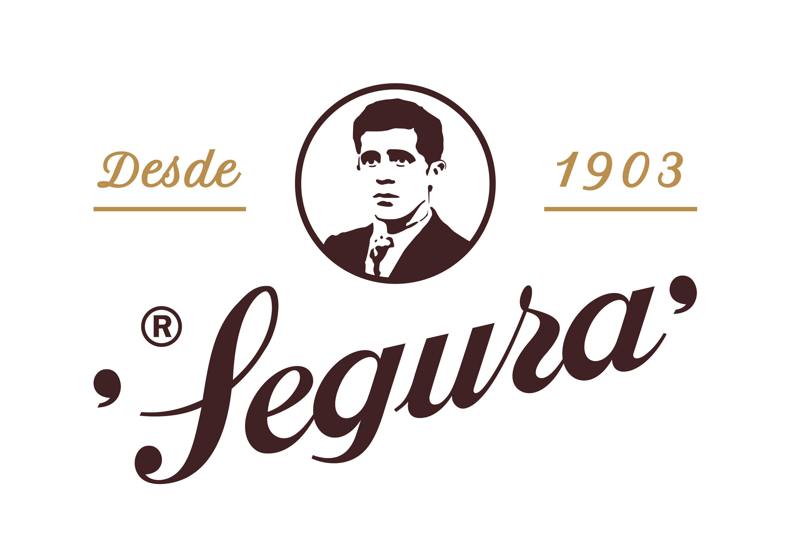
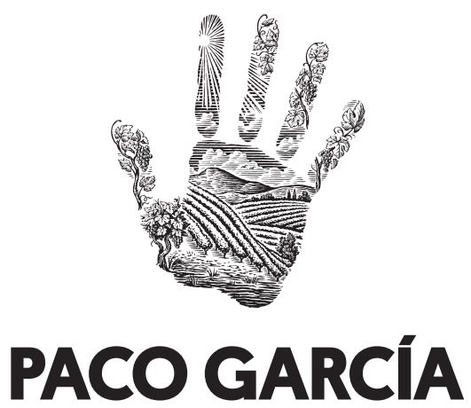

Patrocinadores
Gracias a todas las entidades que hacen posible EBROX OCR Race 2026.




21 de marzo de 2026 · Logroño (Recinto Ferial)
OCR real. Barro, esfuerzo y superación.
EBROX es una carrera de obstáculos (OCR) con varias modalidades para que cada persona encuentre su reto: desde competición con normativa oficial, hasta categorías populares, equipos, familias y la modalidad infantil.
En esta guía encontrarás qué incluye cada modalidad, a quién va dirigida y qué normas aplican, para que elijas con seguridad.
21 de marzo | Logroño (Recinto Ferial)
Inscripción:
Ir a la plataforma
Misma exigencia que Élite, clasificación por grupos de edad.
Inscribirme| Modalidad | Distancia | Obstáculos |
|---|---|---|
| Élite OCRA / Age Group / Élite NO OCRA | 13 km | 40 |
| Popular (+17) / Popular Juvenil (12–16) | 7 km | 30 |
| Equipos / Familias | 5 km | 30 |
| Kids (5–11) | ~2,5 km | 15 |
Consulta el mapa interactivo con recorridos, obstáculos, puntos de seguridad y operativa: ver en Google My Maps.
Consulta tu horario según modalidad y tanda asignada.
Gracias a todas las entidades que hacen posible EBROX OCR Race 2026.


Inscripciones abiertas. Plazas limitadas.
¿Dudas? Cuéntanos tu edad, con quién vienes y si quieres competir o disfrutar, y te recomendamos tu modalidad ideal.